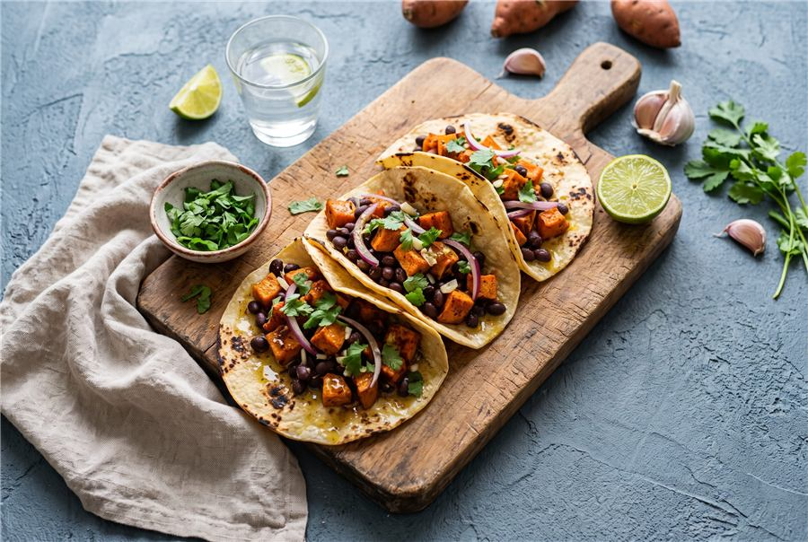
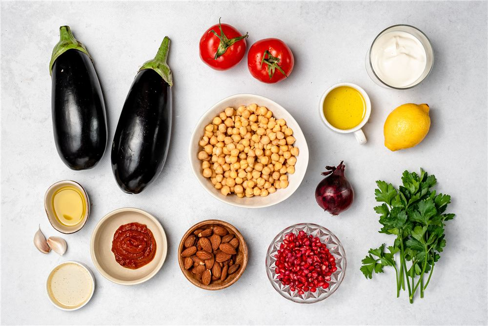
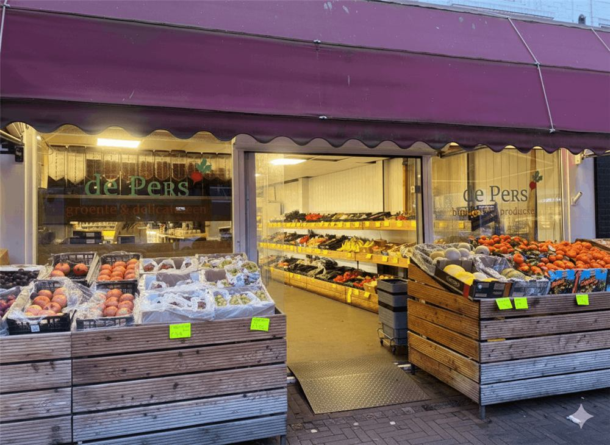
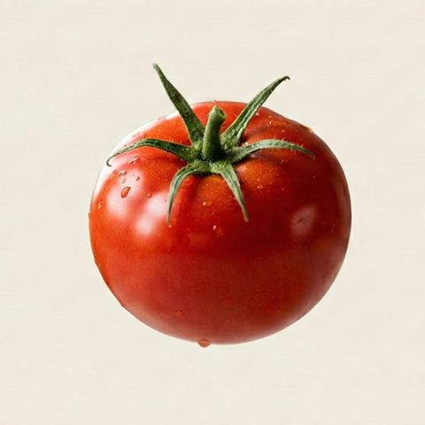
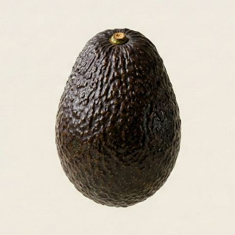
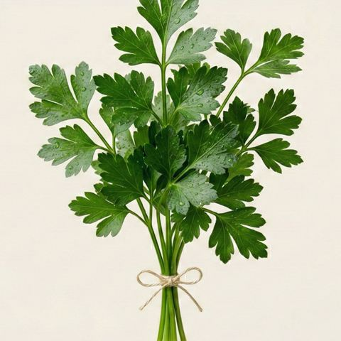

Lokaal
Uit Utrecht, voor Utrecht. Je ingrediënten komen van De Pers, om de hoek.
You. Me. Chef. Kies uit onze recepten of breng je eigen recept mee. Wij wegen elk ingrediënt precies af.
Lokaal uit Utrecht. Geen minimum. Geen abonnement. Vanaf €3,50 per portie.

Het eeuwige gedoe.
"Ik bewaar constant recepten en maak er nooit een."
"Ik heb één wortel en drie eetlepels komijn nodig. De winkel verkoopt zakken en potten."
"Een hele week plannen voelt als commitment. Één maaltijd voelt als verspilling."
Zie je een recept dat je wil maken? Deel het met Youmechef. Wij lezen het en zoeken elk ingrediënt erbij.
In de demo: creamy butter beans, 14 van 14 ingrediënten gevonden, €12,31 voor 4 porties.
Kies uit het menu. Één maaltijd voor vanavond, of een plan voor de hele week.
Bij De Pers in Utrecht wegen we alles precies af. 150 gram ui nodig? Dan krijg je 150 gram.
Ophalen bij De Pers op maandag en vrijdag. Of groen bezorgd per fiets, nu alleen in Wittevrouwen.
Één recept voor twee. Drie voor vier. Of een hele week voor jezelf. Zonder abonnement.

We werken samen met de lokale supermarkt die Utrecht al kent. Verse producten, eerlijke prijzen, en nu ook jouw ingrediënten precies afgewogen.

Alleen producten die echt lekker zijn.

Smaakt niet naar water.

Perfect rijp. Echt waar.

Niet slap en bruin.
Vier dingen die we niet loslaten.
Uit Utrecht, voor Utrecht. Je ingrediënten komen van De Pers, om de hoek.
Precies afgewogen op wat het recept vraagt. Niets in de la, niets in de bak.
Geen abonnement, geen minimum, geen verrassingen op de bon.
Pas afgewogen als je bestelt. Uit het schap, niet uit de koeling.
Youmechef draait in beta in Utrecht en werkt met een wachtlijst. Laat je e-mail achter en we laten je erin zodra er plek is.
Geen creditcard nodig. Je betaalt alleen wat je bestelt.